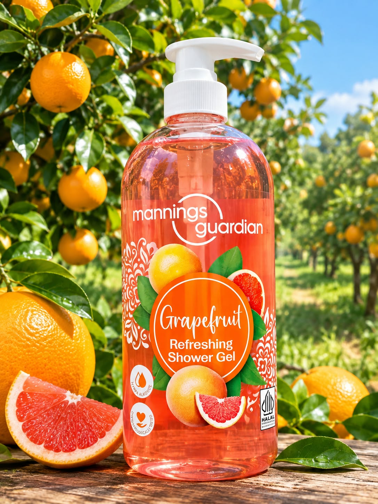
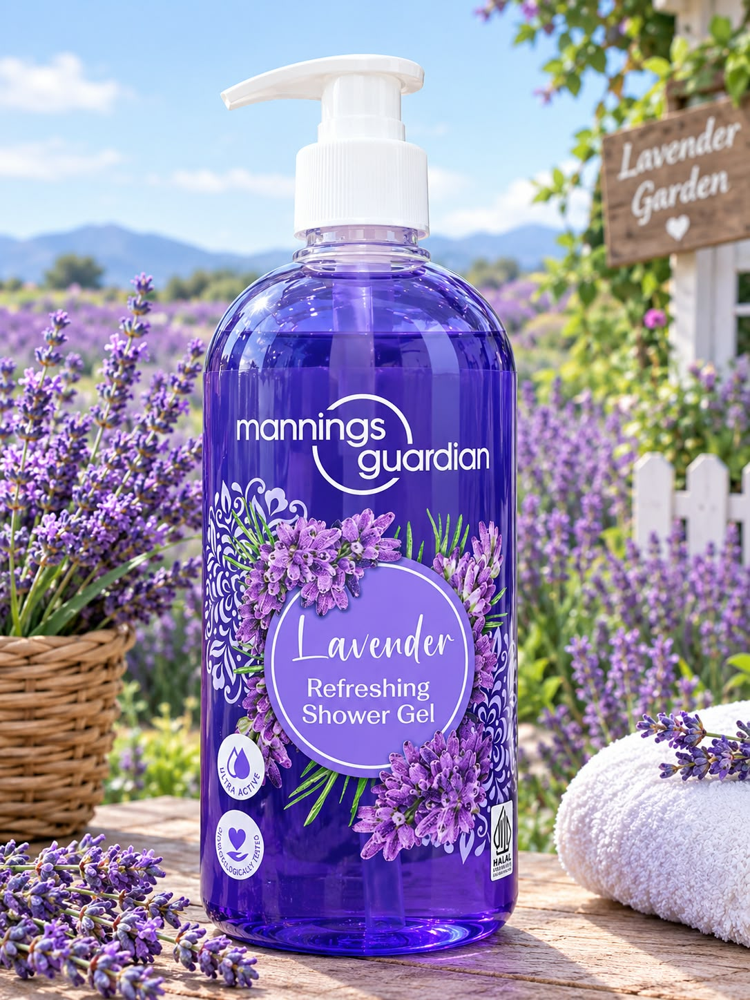
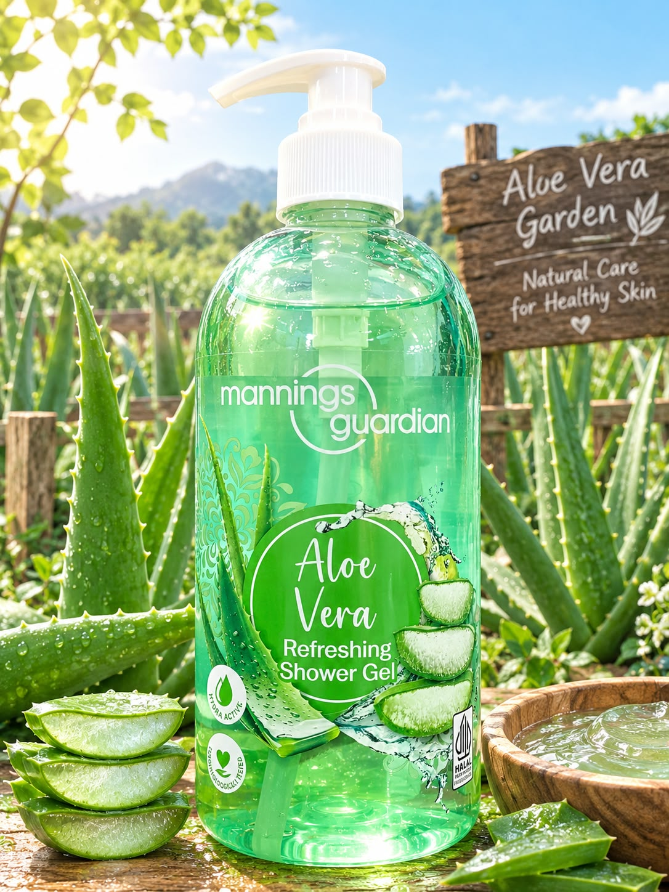
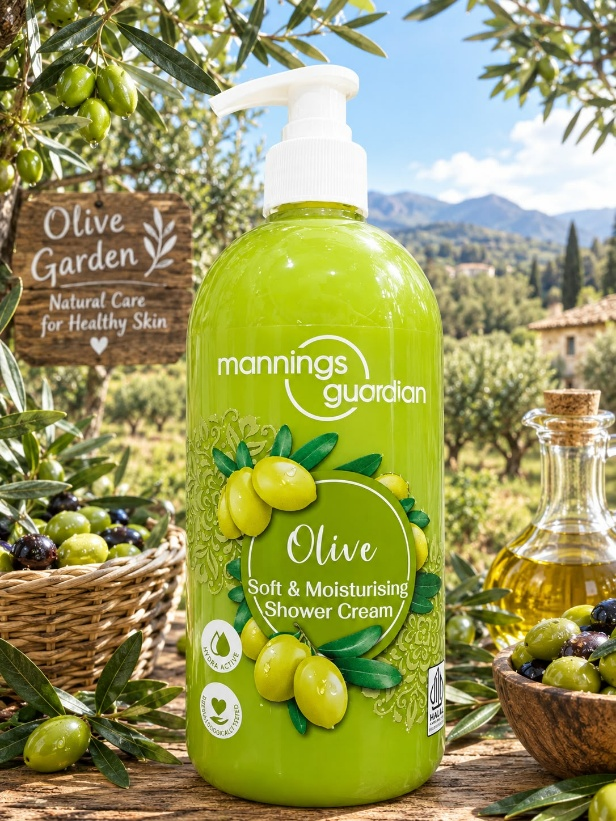
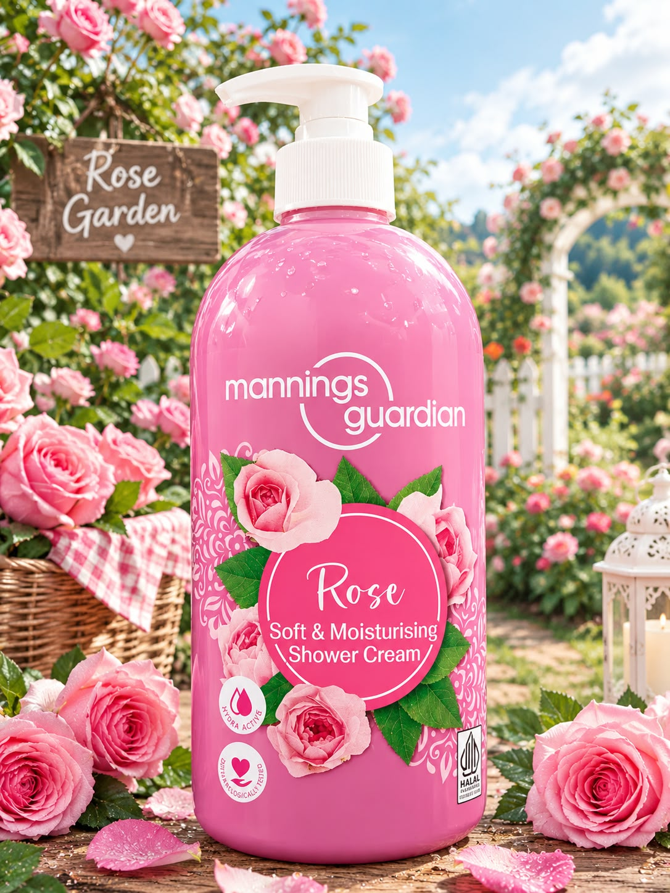

TRENDING PRODUCTS

Mannings Guardian Grapefruit Refreshing Body Wash
adalah produk sabun cair dengan aroma jeruk citrus yang menyegarkan indra saat mandi. Diperkaya dengan ekstrak buah grapefruit dan gliserin untuk melembapkan kulit. Diformulasikan tanpa kandungan sabun biasa (soap-free) sehingga terasa lembut. Kandungan Utama : Ekstrak Grapefruit (Citrus Grandis Fruit Extract) yang memberikan aroma sitrus menyegarkan dan Glycerin untuk membantu melembapkan kulit.
Harga: Rp 93.000

Mannings Guardian Lavender Refreshing Body Wash
adalah sabun mandi bentuk gel dari brand Mannings Guardian diperkaya dengan ekstrak lavender dari Eropa (lavender extract from Europe) dapat membersihkan tubuh secara lembut, menyegarkan serta memberikan efek relaksasi dengan aroma lavender yang lembut.
Kandungan Utama : Diperkaya dengan ekstrak lavender dari Eropa (lavender extract from Europe) dan gliserin untuk membantu melembapkan kulit.
Harga: Rp.93.000

Mannings Guardian Aloevera Refreshing Body Wash
adalah sabun mandi cair (shower gel) dari Guardian yang diperkaya dengan kandungan lidah buaya (aloe vera). Membersihkan kulit secara lembut, menyegarkan, serta menenangkan kulit dengan aroma lembut yang menyegarkan.
Kandungan Utama :Diperkaya dengan ekstrak jus daun lidah buaya (aloe vera leaf juice) dan gliserin untuk membantu menjaga kelembapan kulit.
Harga: Rp.199.000
.png)
Mannings Guardian Almond Milk Shower Cream
adalah krim mandi ukuran 1 liter yang diformulasikan khusus dengan kandungan susu almond alami dan gliserin untuk melembapkan kulit. Memiliki formula lembut yang aman dan tidak merusak skin barrier atau lapisan pelindung kulit. Diperkaya dengan Hydra-Active blend dan susu almond yang membantu menjaga kelembapan alami kulit tanpa membuatnya terasa kering. Menghasilkan busa lembut dengan keharuman almond yang manis, powdery, dan menenangkan.
Base Notes (Aroma Dasar): Natural almond milk (susu almond) dan glycerin (gliserin) untuk menjadikan kulit terasa lebih lembut, kenyal, dan terawat.
Harga: Rp.277.000 Rp.193.500
.png)
Mannings Guardian Soft & Moist Rice Milk Shower Cream
Badalah krim mandi cair yang diformulasikan khusus dengan kandungan ekstrak rice milk (susu beras) alami dan gliserin untuk membersihkan serta merawat kulit. Sabun Rice Milk Guardian memiliki formulasi soap-free (bebas sabun) sehingga sangat lembut di kulit dan tidak merusak lapisan pelindung kelembapan alami kulit. Diperkaya dengan sifat antioksidan dari rice milk yang membantu menjaga kesehatan kulit secara menyeluruh.
Kandungan Utama :Diperkaya dengan Rice Milk alami dan gliserin untuk menjaga kelembapan kulit.
Harga: Rp.129.000

Mannings Guardian Goat's Milk Shower Cream
adalah sabun mandi cair yang diformulasikan khusus dengan kandungan ekstrak susu kambing alami dan gliserin untuk merawat kelembapan kulit. Memiliki pH yang seimbang untuk membersihkan kulit dengan lembut tanpa merusak lapisan pelindung kelembapan alami (moisture barrier). Kandungan Susu Kambing kaya akan antioksidan dari goat's milk yang membantu menjaga kesehatan kulit, menutrisi, serta membuatnya tampak lebih cerah.
Kandungan Utama : Diformulasikan secara khusus dengan susu kambing (Goat Milk) alami dan gliserin untuk menutrisi kulit.
Harga:Rp.146.500

Mannings Guardian Soft & Moist Olive Shower Cream
adalah sabun mandi cair yang diformulasikan khusus dengan ekstrak zaitun (olive) dan gliserin untuk melembapkan, menutrisi, serta menjadikan kulit terasa lembut, halus, dan kenyal.
Kandungan Utama : Ekstrak Zaitun (Olive Extract) dan Gliserin
Harga:Rp. 75.000

Mannings Guardian Rose Moisturising Shower Cream
adalah krim mandi yang diformulasikan khusus dengan ekstrak mawar (rose extract) dan gliserin untuk melembapkan, menutrisi, serta menjadikan kulit terasa lembut, halus, dan kenyal. Memiliki formula bebas sabun (soap-free) sehingga tidak membuat kulit terasa kering.
Kandungan Utama : Produk ini mengandung bahan-bahan seperti Aqua, Sodium Laureth Sulfate, Cocamidopropyl Betaine, Glycerin, Rosa Centifolia Flower Extract (Ekstrak Bunga Mawar),
Harga: Rp 75.000 Rp.60.000

Mannings Guardian Cherry Blossom
adalah sabun mandi cair yang diformulasikan khusus dengan ekstrak bunga Sakura dan Glycerin untuk memberikan nutrisi, menjaga kelembapan alami, dan membuat kulit terasa lebih kenyal.
Kandungan Utama :Diperkaya dengan ekstrak Bunga Sakura (Cherry Blossom Extract) dan Gliserin.
Harga: Rp 100.000 Rp 92.000

Guardian Kids Strawberry Yoghurt Head To Toe Wash
Guardian Kids Head To Toe Wash adalah produk sabun dan sampo 2-in-1 khusus anak dan bayi baru lahir (newborn) yang membersihkan serta melembapkan rambut dan kulit tubuh. Guardian Kids Strawberry Yoghurt Head To Toe Wash: Varian dengan ekstrak stroberi dan yoghurt.
Kandungan Utama :
Formula 2-in-1 : Dapat digunakan dari rambut, kulit kepala, hingga seluruh badan.
Kandungan Yoghurt Activ: Diperkaya bubuk yoghurt yang mengandung Vitamin A, B1, B2, B5, dan B6 untuk menutrisi kulit dan rambut.
Ekstrak Alami : Mengandung ekstrak chamomile, calendula, rice milk, serta tambahan madu untuk menjaga kelembapan.
Aman untuk Bayi Baru Lahir : Telah diuji oleh dokter anak (pediatrician tested) dan terbukti aman untuk newborn.
Formula Lembut : Bebas paraben (paraben-free), memiliki pH seimbang, tidak mengiritasi, dan tear-free (tidak perih di mata).
Harga: Rp.171.000 Rp.157.000

Guardian Kids Orange Yoghurt Head To Toe Wash:
Guardian Kids Head To Toe Wash adalah produk sabun dan sampo 2-in-1 khusus anak dan bayi baru lahir (newborn) yang membersihkan serta melembapkan rambut dan kulit tubuh. Guardian Kids Strawberry Yoghurt Head To Toe Wash: Varian dengan ekstrak stroberi dan yoghurt.
Kandungan Utama :
Formula 2-in-1 : Dapat digunakan dari rambut, kulit kepala, hingga seluruh badan.
Kandungan Yoghurt Activ: Diperkaya bubuk yoghurt yang mengandung Vitamin A, B1, B2, B5, dan B6 untuk menutrisi kulit dan rambut.
Ekstrak Alami : Mengandung ekstrak chamomile, calendula, rice milk, serta tambahan madu untuk menjaga kelembapan.
Aman untuk Bayi Baru Lahir : Telah diuji oleh dokter anak (pediatrician tested) dan terbukti aman untuk newborn.
Formula Lembut : Bebas paraben (paraben-free), memiliki pH seimbang, tidak mengiritasi, dan tear-free (tidak perih di mata).
Harga: Rp 120.000 Rp 93.000

Mannings Guardian Lavender ukuran 100ml (kemasan travel/mini)
Adalah sabun mandi bentuk gel dari brand Mannings Guardian diperkaya dengan ekstrak lavender dari Eropa (lavender extract from Europe) dapat membersihkan tubuh secara lembut, menyegarkan serta memberikan efek relaksasi dengan aroma lavender yang lembut.
Harga:Rp.129.000

Mannings Guardian Cherry Blossom ukuran 100ml (kemasan travel/mini)
Adalah sabun mandi cair yang diformulasikan khusus dengan ekstrak bunga Sakura dan Glycerin untuk memberikan nutrisi, menjaga kelembapan alami, dan membuat kulit terasa lebih kenyal.
Harga: Rp.295.000 Rp.236.000

Mannings Guardian Grapefruit ukuran 100ml (kemasan travel/mini)
Adalah produk sabun cair dengan aroma jeruk citrus yang menyegarkan indra saat mandi. Diperkaya dengan ekstrak buah grapefruit dan gliserin untuk melembapkan kulit. Diformulasikan tanpa kandungan sabun biasa (soap-free) sehingga terasa lembut.
Harga: Rp.295.000 Rp.236.000

Mannings Guardian Conditioning Shampoo
Scalp Care & Calming (Aloe Vera & Ginseng)
Fungsi :Merawat kulit kepala sekaligus memberikan sensasi menenangkan.
Kandungan Utama : Lidah buaya (aloe vera) dan ginseng.
Harga:Rp.205.500

Mannings Guardian Conditioning Shampoo
Smooth & Silky (Honey & Soy)
Fungsi: Menjaga rambut agar terasa lebih lembut, halus, dan mudah diatur.
Kandungan Utama :Ekstrak madu (honey) dan kedelai (soy).
Harga:Rp.205.500

Facial Cotton 35 gram
Kapas Mannings (yang secara resmi dipasarkan sebagai Mannings Guardian Cotton) merupakan produk kapas kecantikan berkualitas tinggi milik jaringan ritel kesehatan dan kecantikan terkemuka di Asia. Dibuat dari 100% kapas murni, kapas ini sangat populer karena teksturnya yang sangat lembut, daya serapnya tinggi, aman secara dermatologis, serta bebas dari zat fluoresen (pemutih pakaian).
Harga: Rp76.000 Rp.69.500

Facial Cotton 75 gram
Kapas Mannings (yang secara resmi dipasarkan sebagai Mannings Guardian Cotton) merupakan produk kapas kecantikan berkualitas tinggi milik jaringan ritel kesehatan dan kecantikan terkemuka di Asia. Dibuat dari 100% kapas murni, kapas ini sangat populer karena teksturnya yang sangat lembut, daya serapnya tinggi, aman secara dermatologis, serta bebas dari zat fluoresen (pemutih pakaian).
Harga: Rp 52.000 Rp 36.000

Round Cotton Puff (Kapas Bulat) 80g
Kapas berbentuk lingkaran yang bebas serat halus (lint-free), umumnya dikemas dengan kantong zip-lock praktis sehingga tetap higienis
Harga: Rp.52.000 Rp.36.000

Mannings Facial Tissue
Tissue kering wajah , Ukuran 200 lembar (200S), Bahan: Serat kayu alami (Virgin Wood Pulp) yang lembut dan aman untuk kulit.
Harga: Rp.52.000 Rp.36.000

Mannings Guardian Goat's Milk Moisturising Shower Cream 600ml Refill Pack
adalah krim mandi berukuran 1 liter yang diformulasikan khusus dengan susu kambing alami dan gliserin. Kandungan antioksidan dari susu kambing membantu menjaga kesehatan kulit dan mencerahkannya.
Harga: Rp 50.500 Rp 32.500

Mannings (Guardian) Rice Milk Shower Cream kemasan isi ulang (refill) 600ml
Diformulasikan secara khusus dengan kandungan susu almond alami dan gliserin. Berfungsi untuk membersihkan dan melindungi kulit dengan lembut tanpa mengikis lapisan kelembapan alami kulit, sehingga kulit menjadi lebih halus, lembap, dan kenyal.
Harga: Rp 50.500 Rp 32.500

Mannings (Guardian) Cherryblossom Cream kemasan isi ulang (refill) 600ml
Diformulasikan dengan ekstrak bunga sakura dan gliserin untuk memberikan kelembapan ekstra, nutrisi, membantu menyamarkan kerutan, serta memancarkan kilau kulit yang segar. Dilengkapi dengan aroma bunga sakura yang lembut untuk memanjakan indera Anda.
Harga: Rp 52.000 Rp 36.000

Mannings Guardian JOGUMAN Lavender Refreshing Shower Gel 1L
adalah produk sabun mandi cair (body wash) edisi spesial kolaborasi antara Guardian/Mannings dengan karakter dinosaurus populer asal Korea Selatan. Dengan Ekstrak Lavender Eropa, Memberikan aroma lavender yang lembut, menenangkan pikiran, serta membantu merilekskan tubuh setelah seharian beraktivitas. Dan Glycerin untuk Menjaga kelembapan alami kulit agar tidak terasa kering atau tertarik setelah dibilas.
Harga: Rp 219.600 Rp 183.000

Mannings Guardian JOGUMAN Moisturising Shower Cream 1L - Almond Milk
adalah sabun mandi cair (shower cream) yang diformulasikan khusus dengan kandungan susu almond alami dan gliserin. Produk ini merupakan hasil kolaborasi dengan karakter dinosaurus populer asal Korea Selatan. Memiliki formula lembut yang aman dan tidak merusak skin barrier atau lapisan pelindung kulit. Diperkaya dengan Hydra-Active blend dan susu almond yang membantu menjaga kelembapan alami kulit tanpa membuatnya terasa kering. Menghasilkan busa lembut dengan keharuman almond yang manis, powdery, dan menenangkan.
Harga: Rp 297.000 Rp 247.500

Mannings Guardian JOGUMAN Moisturising Shower Cream - Cherry Blossom
adalah produk sabun mandi cair hasil kolaborasi eksklusif antara peritel Mannings/Guardian dengan karakter dinosaurus populer dari Korea Selatan. Sabun mandi cair ini dirancang khusus untuk membersihkan kulit secara lembut sekaligus memberikan kelembapan ekstra. Produk ini menghasilkan busa beludru yang melimpah dan diperkaya dengan aroma bunga sakura (cherry blossom) yang manis dan menenangkan untuk memanjakan indra Anda selama mandi.
Harga: Rp 258.000 Rp.215.000